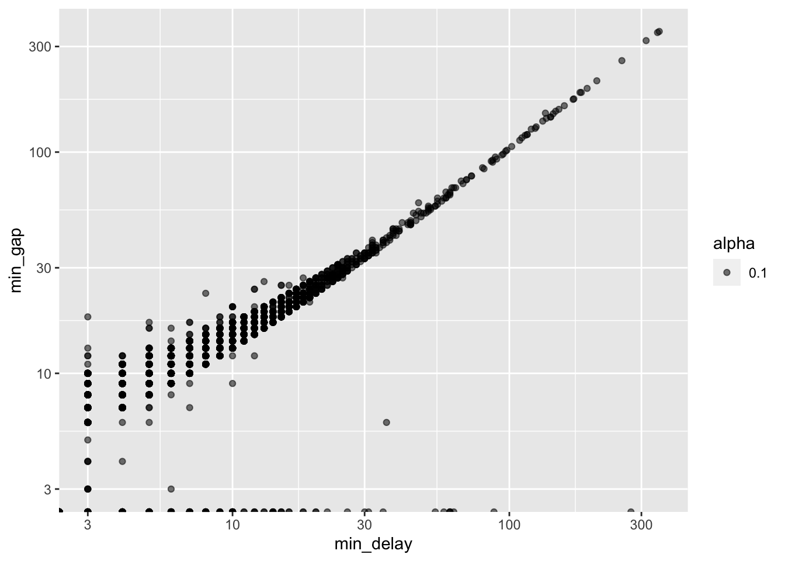
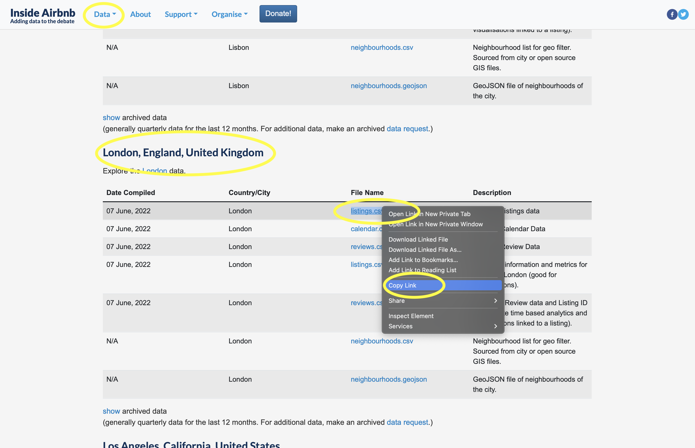
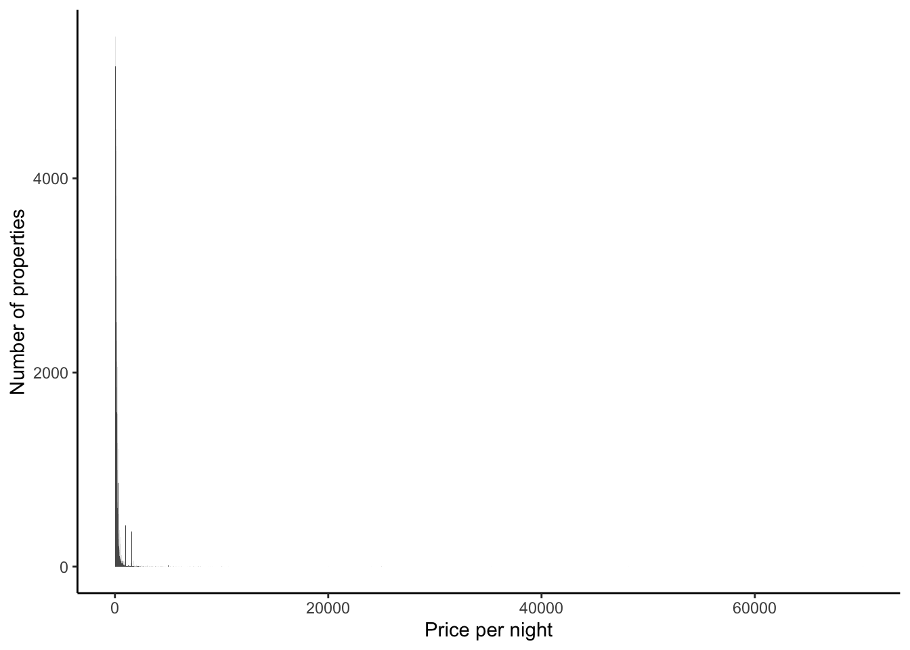
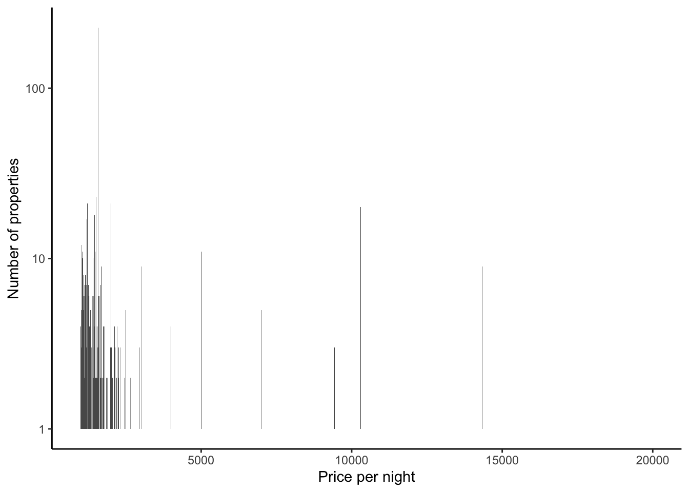
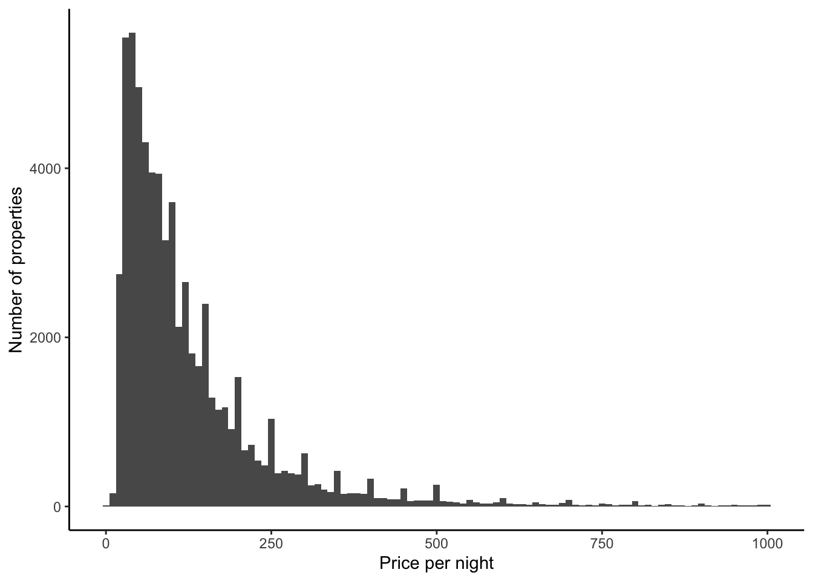
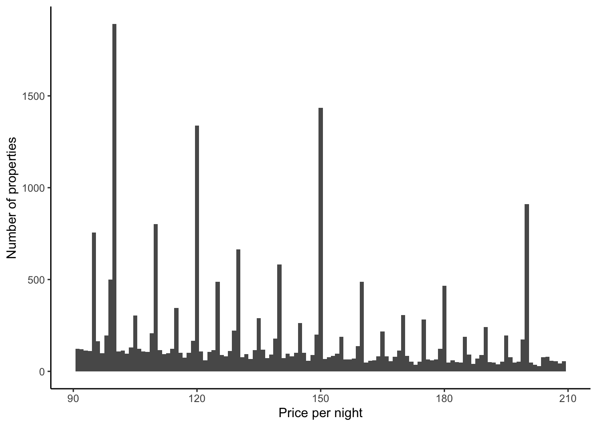
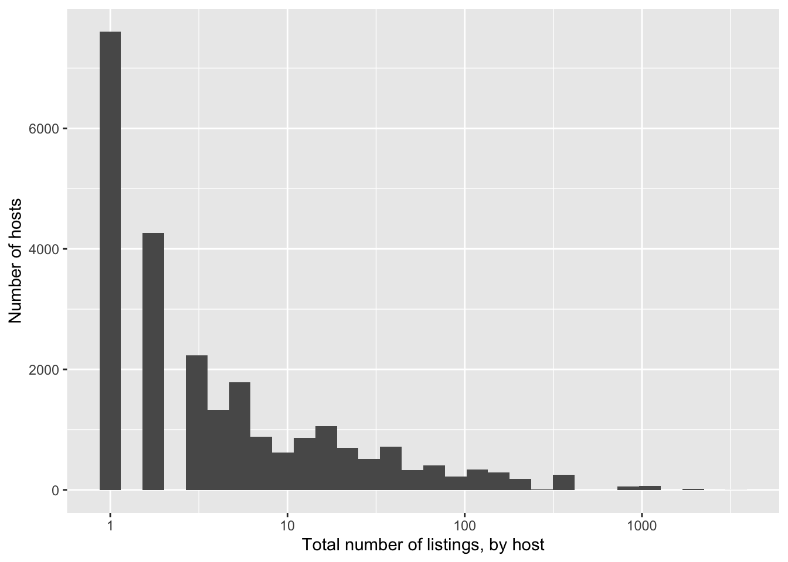
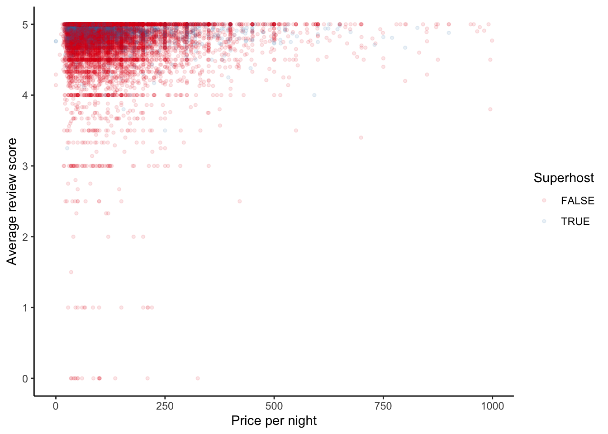

Read The Future of Data Analysis, Part 1 “General Considerations”, (Tukey 1962)
John Tukey, the twentieth century statistician, made a variety of contributions to statistics, and this chapter was ahead of its time, about the ways in which we ought to learn something from data.
Read Best Practices in Data Cleaning, Chapter 6 “Dealing with Missing or Incomplete Data”, (Osborne 2012)
Exploratory data analysis is the process of coming to terms with a new dataset by constructing graphs and tables. We want to explore and understand three critical aspects:
each individual variable by itself;
each individual in the context of other, relevant, variables; and
the data that are not there.
During the EDA process we want to come to understand the issues and features of the dataset and how this may affect analysis decisions. We are especially concerned about missing values and outliers.
The future of data analysis can involve great progress, the overcoming of real difficulties, and the provision of a great service to all fields of science and technology. Will it? That remains to us, to our willingness to take up the rocky road of real problems in preference to the smooth road of unreal assumptions, arbitrary criteria, and abstract results without real attachments. Who is for the challenge?
Exploratory data analysis is never finished. It is the active process of exploring and becoming familiar with our data. Like a farmer with their hands in the earth, we need to know every contour and aspect of our data. We need to know how it changes, what it shows, hides, and what are its limits. Exploratory data analysis (EDA) is the unstructured process of doing this.
EDA is a means to an end. While it will inform the entire paper, especially the data section, it is not typically something that ends up in the final paper. The way to proceed is to make a separate Quarto document. Add code and brief notes on-the-go. Do not delete previous code, just add to it. By the end of it we will have created a useful notebook that captures our exploration of the dataset. This is a document that will guide the subsequent analysis and modelling.
EDA draws on a variety of skills and there are a lot of options when understanding EDA (Staniak and Biecek 2019). Every tool should be considered. Look at the data and scroll through it. Make tables, plots, summary statistics, even some models. The key is to iterate, move quickly rather than perfectly, and come to a thorough understanding of the data.
Interestingly, coming to thoroughly understand the data that we have often helps us understand what we do not have. We are interested in the following process:
Understand the distribution and properties of individual variables.
Understand relationships between variables.
Understand what is not there.
There is no one correct process or set of steps that are required to undertake and complete EDA. Instead, the relevant steps and tools depend on the data and question of interest. As such, in this chapter we will illustrate approaches to EDA through various examples of EDA including US state populations, subway delays in Toronto, and Airbnb listings in London.
11.2 1975 US states data
As a first example we consider US state populations as of 1975. This dataset is built into R with state.x77. Here is what the dataset looks like:
11.2.1 Distribution and properties of individual variables
We want to get a quick sense of the data. The first step is to have a look at the top and bottom of it with head() and tail(), then a random selection, and finally to focus on the variables and their class with glimpse(). The random selection is an important aspect, and anytime you use head() you should also quickly consider a random selection.
us_populations |>head()
# A tibble: 6 × 6
state population income illiteracy life_exp area
<chr> <dbl> <dbl> <dbl> <dbl> <dbl>
1 Alabama 3615 3624 2.1 69.0 50708
2 Alaska 365 6315 1.5 69.3 566432
3 Arizona 2212 4530 1.8 70.6 113417
4 Arkansas 2110 3378 1.9 70.7 51945
5 California 21198 5114 1.1 71.7 156361
6 Colorado 2541 4884 0.7 72.1 103766
us_populations |>tail()
# A tibble: 6 × 6
state population income illiteracy life_exp area
<chr> <dbl> <dbl> <dbl> <dbl> <dbl>
1 Vermont 472 3907 0.6 71.6 9267
2 Virginia 4981 4701 1.4 70.1 39780
3 Washington 3559 4864 0.6 71.7 66570
4 West Virginia 1799 3617 1.4 69.5 24070
5 Wisconsin 4589 4468 0.7 72.5 54464
6 Wyoming 376 4566 0.6 70.3 97203
us_populations |>slice_sample(n =10)
# A tibble: 10 × 6
state population income illiteracy life_exp area
<chr> <dbl> <dbl> <dbl> <dbl> <dbl>
1 Arizona 2212 4530 1.8 70.6 113417
2 Nebraska 1544 4508 0.6 72.6 76483
3 Washington 3559 4864 0.6 71.7 66570
4 Maine 1058 3694 0.7 70.4 30920
5 New York 18076 4903 1.4 70.6 47831
6 North Carolina 5441 3875 1.8 69.2 48798
7 Arkansas 2110 3378 1.9 70.7 51945
8 Connecticut 3100 5348 1.1 72.5 4862
9 Missouri 4767 4254 0.8 70.7 68995
10 New Hampshire 812 4281 0.7 71.2 9027
We are then interested in understanding key statistics, such as the minimum, median, and maximum values for numeric variables with summary() from base R. We can use skim from skimr(Waring et al. 2022) for similar purposes, the advantage being that it provides more information about character variables. We notice that population appears to be right-skewed (with a mean that is considerably larger than the median). And that life expectancy varies by six years between the states.
library(skimr)us_populations |>summary()
state population income illiteracy
Length:50 Min. : 365 Min. :3098 Min. :0.500
Class :character 1st Qu.: 1080 1st Qu.:3993 1st Qu.:0.625
Mode :character Median : 2838 Median :4519 Median :0.950
Mean : 4246 Mean :4436 Mean :1.170
3rd Qu.: 4968 3rd Qu.:4814 3rd Qu.:1.575
Max. :21198 Max. :6315 Max. :2.800
life_exp area
Min. :67.96 Min. : 1049
1st Qu.:70.12 1st Qu.: 36985
Median :70.67 Median : 54277
Mean :70.88 Mean : 70736
3rd Qu.:71.89 3rd Qu.: 81162
Max. :73.60 Max. :566432
us_populations |>skim()
Data summary
Name
us_populations
Number of rows
50
Number of columns
6
_______________________
Column type frequency:
character
1
numeric
5
________________________
Group variables
None
Variable type: character
skim_variable
n_missing
complete_rate
min
max
empty
n_unique
whitespace
state
0
1
4
14
0
50
0
Variable type: numeric
skim_variable
n_missing
complete_rate
mean
sd
p0
p25
p50
p75
p100
hist
population
0
1
4246.42
4464.49
365.00
1079.50
2838.50
4968.50
21198.0
▇▂▁▁▁
income
0
1
4435.80
614.47
3098.00
3992.75
4519.00
4813.50
6315.0
▃▅▇▂▁
illiteracy
0
1
1.17
0.61
0.50
0.62
0.95
1.58
2.8
▇▃▂▂▁
life_exp
0
1
70.88
1.34
67.96
70.12
70.67
71.89
73.6
▃▃▇▅▅
area
0
1
70735.88
85327.30
1049.00
36985.25
54277.00
81162.50
566432.0
▇▁▁▁▁
Finally, it is especially important to understand the behavior of these key summary statistics at the limits. In particular, one approach is to randomly remove some observations and compare what happens to them. For instance, we can randomly create five datasets that differ on the basis of which rows are removed. We can then compare the summary statistics. If any of them are especially different then we might want to look at the rows that were removed as they may contain observations with high influence.
Table 11.1: Comparing the mean population when different states are randomly removed
Seed
Mean
Ignored states
1
4,469
Arkansas, Rhode Island, Alabama, North Dakota, Minnesota
2
4,027
Massachusetts, Iowa, Colorado, West Virginia, New York
3
4,086
California, Idaho, Rhode Island, Oklahoma, South Carolina
4
4,391
Hawaii, Arizona, Connecticut, Utah, New Jersey
5
4,340
Alaska, Texas, Iowa, Hawaii, South Dakota
In the case of the populations of US states, we know that larger states, such as California and New York, will have an out sized effect on our estimate of the mean. Table 11.1 supports that, as we can see that when we use seeds 2 and 3, there is a lower mean.
11.2.2 Missing data
We have discussed missing data a lot throughout this book, and understanding missing data is something that is a substantial focus of EDA. One tempting strategy is to either remove rows that have missing data, or to infill the missing data, say with an average of the column, or using multiple imputation to fill it based on a few different options. These approaches have their place, but need to be used with humility, and extensively communicated. The use of simulation is critical. To understand why, we will consider the US population data, remove various aspects, and look at the effect on summary statistics.
We can start by removing the population data for three randomly selected states.
Having generated a dataset with some missing data, we can now consider a few common approaches for dealing with missing data, and compare the implied values for each state, and the overall US mean population. We consider the following options:
Drop the observations with missing data.
Impute the mean of observations without missing data.
Use multiple imputation, which involves creating many potential datasets, conducting inference, and then bringing them together potentially though averaging (Gelman and Hill 2007, 542).
To drop the observations with missing data, we can use mean() because by default it will exclude observations with missing values in its calculation. To impute the mean, we construct a second dataset with the observations with missing data removed. We then compute the mean of the population column, and impute that into the missing values in the original dataset. And finally, we can implement multiple imputation with mice() from mice(van Buuren and Groothuis-Oudshoorn 2011).
Table 11.2: Comparing the imputed values of population for three US states and the overall mean population
Observation
Drop missing rows
Input the mean
Multiple imputation
Actual value
Florida
NA
4,308
5,814
8,277
Montana
NA
4,308
681
746
New Hampshire
NA
4,308
2,110
812
Overall
4,308
4,308
4,222
4,246
Table 11.2 makes it clear that none of these approaches should be naively imposed. For instance, Florida’s population should be 8,277. Imputing the mean across all the states would result in an estimate of 4,308, and multiple imputation results in an estimate of 5,814, both of which are too low. If imputation is the answer, it is likely that the question is wrong. It is worth pointing out that it was developed for specific circumstances of limiting public disclosure of private information (Horton and Lipsitz 2001).
Nothing can make up for missing data (Manski 2022). The conditions under which it makes sense to impute the mean or the prediction based on multiple imputation are not common, and even more rare is our ability to verify them. Missing data are not a nuisance to be papered over. The correct choice depends on the circumstances and purpose of the analysis. Simulating the removal of observations that we actually have to better understand the trade-off in the particular situation is critical. Whatever choice is made, and there is rarely a clear-cut solution, the most important aspect is to clearly document and communicate what was done, and explore the effect of different choices on subsequent estimates. One way to proceed is to do exactly what we have done here—simulate different scenarios by removing some of the data that we do have, and evaluating how the approaches differ.
Finally, more prosaically, but just as importantly, sometimes missing data is encoded with particular values. For instance, while R has the option of “NA”, sometimes numerical data is entered as “-99” or alternatively as a very large integer such as “9999999” if it is missing. It is always worth looking explicitly for values that seem like they do not belong and investigating them. Graphs and tables are especially useful here.
11.3 TTC subway delays
As a second, and more involved, example of EDA we use opendatatoronto(Gelfand 2022), introduced in Chapter 2, and the tidyverse(Wickham et al. 2019) to obtain and explore data about the Toronto subway system. We are especially interested in getting a sense of the delays that have occurred.
To begin, we download the data on Toronto Transit Commission (TTC) subway delays in 2021. The data are available as an Excel file with a separate sheet for each month. We are interested in 2021 so we filter to just that year then download it using get_resource() and bring the months together with bind_rows().
Rows: 16370 Columns: 10
── Column specification ────────────────────────────────────────────────────────
Delimiter: ","
chr (5): day, station, code, bound, line
dbl (3): min_delay, min_gap, vehicle
dttm (1): date
time (1): time
ℹ Use `spec()` to retrieve the full column specification for this data.
ℹ Specify the column types or set `show_col_types = FALSE` to quiet this message.
The dataset has a variety of columns, and we can find out more about each of them by downloading the codebook. The reason for each delay is coded, and so we can also download the explanations. One variable of interest appears to be “min_delay”, which gives the extent of the delay in minutes.
There is no one way to explore a dataset while conducting EDA, but we are usually especially interested in:
What should the variables look like? For instance, what is their type, what are the values, and what does the distribution of these look like?
What aspects are surprising, both in terms of data that are there that we do not expect, such as outliers, but also in terms of data that we may expect but do not have, such as missing data.
Developing a goal for our analysis. For instance, in this case, it might be understanding the factors such as stations and the time of day that are associated with delays. While we would not answer these questions formally here, we might explore what an answer could look like.
It is important to document all aspects as we go through and note anything surprising. We are looking to create a record of the steps and assumptions that we made as we were going because these will be important when we come to modelling. In the natural sciences, a research notebook of this type can be a legal document (Ryan 2015).
11.3.1 Distribution and properties of individual variables
We should check that the variables are what they say they are. If they are not, then we need to work out what to do, for instance, should we change them, or possibly even remove them? It is also important to ensure that the class of the variables is as we expect. For instance, variables that should be a factor are a factor and those that should be a character are a character. And that we do not accidentally have, say, factors as numbers, or vice versa. One way to do this is to use unique(), and another is to use table(). There is no universal answer to which variables should be of certain classes, because the answer depends on the context.
We have likely issues in terms of the subway lines. Some of them have a clear fix, but not all. One option would be to drop them, but we would need to think about whether these errors might be correlated with something that is of interest, because if they were then we may be dropping important information. There is usually no one right answer, because it will usually depend on what we are using the data for. We would note the issue, as we continued with EDA and then decide later about what to do. For now, we will remove all the lines that are not the ones that we know to be correct based on the codebook.
delay_codebook |>filter(field_name =="Line")
# A tibble: 1 × 3
field_name description example
<chr> <chr> <chr>
1 Line TTC subway line i.e. YU, BD, SHP, and SRT YU
Entire careers are spent understanding missing data, and the presence, or lack, of missing values can haunt an analysis. To get started we could look at known-unknowns, which are the NAs for each variable. For instance, we could create counts by variable.
In this case we have many missing values in “bound” and two in “line”. For these known-unknowns, as discussed in Chapter 6, we are interested in whether or not they are missing at random. We want to, ideally, show that data happened to just drop out. This is unlikely, and so we are usually trying to look at what is systematic about how our data are missing.
Sometimes data happen to be duplicated. If we did not notice this, then our analysis would be wrong in ways that we would not be able to consistently expect. There are a variety of ways to look for duplicated rows, but get_dupes() from janitor(Firke 2021) is especially useful.
This dataset has many duplicates. Again, we are interested in whether there is something systematic going on. Remembering that during EDA we are trying to quickly come to terms with a dataset, one way forward is to flag this as an issue to come back to and explore later, and to just remove duplicates for now using distinct().
# A tibble: 17 × 2
station n
<chr> <int>
1 DUNDAS WEST STATION 198
2 EGLINTON WEST STATION 142
3 FINCH WEST STATION 126
4 FINCH WEST TO LAWRENCE 3
5 FINCH WEST TO WILSON 1
6 LAWRENCE WEST CENTRE 1
7 LAWRENCE WEST STATION 127
8 LAWRENCE WEST TO EGLIN 1
9 SHEPPARD WEST - WILSON 1
10 SHEPPARD WEST STATION 210
11 SHEPPARD WEST TO LAWRE 3
12 SHEPPARD WEST TO ST CL 2
13 SHEPPARD WEST TO WILSO 7
14 ST CLAIR WEST STATION 205
15 ST CLAIR WEST TO ST AN 1
16 ST. CLAIR WEST TO KING 1
17 ST.CLAIR WEST TO ST.A 1
We could try to quickly bring a little order to the chaos by just taking just the first word or first few words, accounting for names like “ST. CLAIR” and “ST. PATRICK” by checking if the name starts with “ST”, as well as distinguishing between stations like “DUNDAS” and “DUNDAS WEST” by checking if the name contains “WEST”. Again, we are just trying to get a sense of the data, not necessarily make binding decisions here. We use word() from stringr to extract specific words from the station names.
We need to see the data in its original state to understand it, and we use bar charts, scatterplots, line plots, and histograms extensively for this. During EDA we are not as concerned with whether the graph looks nice, but are instead trying to acquire a sense of the data as quickly as possible. We can start by looking at the distribution of “min_delay”, which is one outcome of interest.
The largely empty graph in Figure 11.1 (a) suggests the presence of outliers. There are a variety of ways to try to understand what could be going on, but one quick way to proceed is to use logarithms, remembering that we would expect values of zero to drop away (Figure 11.1 (b)).
This initial exploration suggests there are a small number of large delays that we might like to explore further. We will join this dataset with “delay_codes” to understand what is going on.
# A tibble: 15,908 × 4
station_clean code min_delay code_desc
<chr> <chr> <dbl> <chr>
1 MUSEUM PUTTP 348 Traction Power Rail Related
2 EGLINTON PUSTC 343 Signals - Track Circuit Problems
3 WOODBINE MUO 312 Miscellaneous Other
4 MCCOWAN PRSL 275 Loop Related Failures
5 SHEPPARD WEST PUTWZ 255 Work Zone Problems - Track
6 ISLINGTON MUPR1 207 Priority One - Train in Contact With Person
7 SHEPPARD WEST MUPR1 191 Priority One - Train in Contact With Person
8 ROYAL SUAP 182 Assault / Patron Involved
9 ROYAL MUPR1 180 Priority One - Train in Contact With Person
10 SHEPPARD MUPR1 171 Priority One - Train in Contact With Person
# ℹ 15,898 more rows
From this we can see that the 348 minute delay was due to “Traction Power Rail Related”, the 343 minute delay was due to “Signals - Track Circuit Problems”, and so on.
Another thing that we are looking for is various groupings of the data, especially where sub-groups may end up with only a small number of observations in them. This is because any analysis could be especially influenced by them. One quick way to do this is to group the data by a variable that is of interest, for instance, “line”, using color.
Figure 11.2 (a) uses density so that we can look at the distributions more comparably, but we should also be aware of differences in frequency (Figure 11.2 (b)). In this case, we will see that “SHP” and “SRT” have much smaller counts.
To group by another variable, we can add facets (Figure 11.3).
Figure 11.3: Frequency of the distribution of delay, in minutes, by day
We can also plot the top five stations by mean delay, faceted by line (Figure 11.4). This raises something that we would need to follow up on, which is what is “ZONE” in “YU”?
Figure 11.4: Top five stations, by mean delay and line
As discussed in Chapter 9, dates are often difficult to work with because they are so prone to having issues. For this reason, it is especially important to consider them during EDA. Let us create a graph by week, to see if there is any seasonality over the course of a year. When using dates, lubridate(Grolemund and Wickham 2011) is especially useful. For instance, we can look at the average delay, of those that were delayed, by week, using week() to construct the weeks (Figure 11.5).
Figure 11.6: Delays longer than ten minutes, by week, for the Toronto subway
These figures, tables, and analysis may not have a place in a final paper. Instead, they allow us to become comfortable with the data. We note aspects about each that stand out, as well as the warnings and any implications or aspects to return to.
11.3.2 Relationships between variables
We are also interested in looking at the relationship between two variables. We will draw heavily on graphs for this, and appropriate types, for different circumstances, were discussed in Chapter 5. Scatter plots are especially useful for continuous variables, and are a good precursor to modelling. For instance, we may be interested in the relationship between the delay and the gap, which is the number of minutes between trains (Figure 11.7).
all_2021_ttc_data_no_dupes_with_explanation |>ggplot(aes(x = min_delay, y = min_gap)) +geom_point() +scale_x_log10() +scale_y_log10()

Figure 11.7: Relationship between delay and gap for the Toronto subway in 2021
The relationship between categorical variables takes more work, but we could also, for instance, look at the top five reasons for delay by station. We may be interested in whether they differ, and how any difference could be modelled (Figure 11.8).
Figure 11.8: Relationship between categorical variables for the Toronto subway in 2021
11.4 Airbnb listings in London
In this case study we look at Airbnb listings in London as at 7 June 2022. The dataset is from Inside Airbnb(Cox 2021) and we will read it from their website, and then save a local copy. We can give read_csv() a link to where the dataset is and it will download it. This helps with reproducibility because the source is clear. But, as that link could change at any time, longer-term reproducibility, as well as wanting to minimize the effect on the Inside Airbnb servers, suggests that we should also save a local copy of the data and then use that.
To get the dataset that we need, go to Inside Airbnb -> “Data” -> “Get the Data”, then scroll down to London. We are interested in the “listings dataset”, and we right click to get the URL that we need (Figure 11.9). Inside Airbnb update the data that they make available, and so the particular dataset that is available will change over time.

Figure 11.9: Obtaining the Airbnb data from Inside Airbnb
As the original dataset is not ours, we should not make that public without first getting written permission. For instance, we may want to add it to our inputs folder, but use a “.gitignore” entry, covered in Chapter 3, to ensure that we do not push it to GitHub. The “guess_max” option in read_csv() helps us avoid having to specify the column types. Usually read_csv() takes a best guess at the column types based on the first few rows. But sometimes those first ones are misleading and so “guess_max” forces it to look at a larger number of rows to try to work out what is going on. Paste the URL that we copied from Inside Airbnb into the URL part. And once it is downloaded, save a local copy.
It is extremely important that we refer to this local copy of our data when we run our scripts to explore the data, rather than asking the Inside Airbnb servers for the data each time. It might be worth even commenting out this call to their servers to ensure that we do not accidentally stress their service.
11.4.1 Distribution and properties of individual variables
There are many columns, so we will just select a few.
# A tibble: 66,152 × 21
host_id host_since host_response_time host_is_superhost host_listings_count
<dbl> <date> <chr> <lgl> <dbl>
1 54730 2009-11-16 within a few hours FALSE 3
2 60302 2009-12-05 a few days or more FALSE 1
3 41759 2009-09-28 within a few hours FALSE 1
4 67915 2010-01-05 within a few hours FALSE 3
5 67564 2010-01-04 within a few hours FALSE 18
6 103583 2010-04-05 N/A FALSE 3
7 155938 2010-06-30 within a few hours TRUE 1
8 144444 2010-06-14 within a few hours FALSE 2
9 134606 2010-05-29 within a few hours FALSE 1
10 157884 2010-07-04 within a few hours FALSE 4
# ℹ 66,142 more rows
# ℹ 16 more variables: host_total_listings_count <dbl>,
# host_neighbourhood <chr>, neighbourhood_cleansed <chr>, room_type <chr>,
# bathrooms <lgl>, bedrooms <dbl>, price <chr>, number_of_reviews <dbl>,
# has_availability <lgl>, review_scores_rating <dbl>,
# review_scores_accuracy <dbl>, review_scores_cleanliness <dbl>,
# review_scores_checkin <dbl>, review_scores_communication <dbl>, …
First we might be interested in price. It is a character at the moment and so we need to convert it to a numeric. This is a common problem, and we need to be a little careful that it does not all just convert to NAs. In our case if we just force the price data to be a numeric then it will go to NA because there are a lot of characters where it is unclear what the numeric equivalent is, such as “$”. We need to remove those characters first.
Now we can look at the distribution of prices (Figure 11.10 (a)). There are outliers, so again we might like to consider it on the log scale (Figure 11.10 (b)).
airbnb_data_selected |>ggplot(aes(x = price)) +geom_histogram(binwidth =10) +theme_classic() +labs(x ="Price per night",y ="Number of properties" )airbnb_data_selected |>filter(price >1000) |>ggplot(aes(x = price)) +geom_histogram(binwidth =10) +theme_classic() +labs(x ="Price per night",y ="Number of properties" ) +scale_y_log10()

(a) Distribution of prices

(b) Using the log scale for prices more than $1,000
Figure 11.10: Distribution of prices of London Airbnb rentals in June 2022
If we focus on prices that are less than $1,000, then we see that most properties have a nightly price less than $250 (Figure 11.11 (a)). Interestingly it looks like there is some bunching of prices. It might be that this is happening around numbers ending in zero or nine. Let us just zoom in on prices between $90 and $210, out of interest, but change the bins to be smaller (Figure 11.11 (b)).
airbnb_data_selected |>filter(price <1000) |>ggplot(aes(x = price)) +geom_histogram(binwidth =10) +theme_classic() +labs(x ="Price per night",y ="Number of properties" )airbnb_data_selected |>filter(price >90) |>filter(price <210) |>ggplot(aes(x = price)) +geom_histogram(binwidth =1) +theme_classic() +labs(x ="Price per night",y ="Number of properties" )

(a) Prices less than $1,000

(b) Prices between $90 and $210
Figure 11.11: Distribution of prices less than $1000 for London Airbnb rentals in June 2022 shows bunching
For now, we will just remove all prices that are more than $999.
Superhosts are especially experienced Airbnb hosts, and we might be interested to learn more about them. For instance, a host either is or is not a superhost, and so we would not expect any NAs. But we can see that there are. It might be that the host removed a listing or similar.
# A tibble: 6 × 21
host_id host_since host_response_time host_is_superhost host_listings_count
<dbl> <date> <chr> <lgl> <dbl>
1 8317501 NA <NA> NA NA
2 22047056 NA <NA> NA NA
3 39828462 NA <NA> NA NA
4 43023101 NA <NA> NA NA
5 44815642 NA <NA> NA NA
6 79411714 NA <NA> NA NA
# ℹ 16 more variables: host_total_listings_count <dbl>,
# host_neighbourhood <chr>, neighbourhood_cleansed <chr>, room_type <chr>,
# bathrooms <lgl>, bedrooms <dbl>, price <int>, number_of_reviews <dbl>,
# has_availability <lgl>, review_scores_rating <dbl>,
# review_scores_accuracy <dbl>, review_scores_cleanliness <dbl>,
# review_scores_checkin <dbl>, review_scores_communication <dbl>,
# review_scores_location <dbl>, review_scores_value <dbl>
We will also want to create a binary variable from this. It is true/false at the moment, which is fine for the modelling, but there are a handful of situations where it will be easier if we have a 0/1. And for now we will just remove anyone with a NA for whether they are a superhost.
On Airbnb, guests can give one to five star ratings across a variety of different aspects, including cleanliness, accuracy, value, and others. But when we look at the reviews in our dataset, it is clear that it is effectively a binary, and almost entirely the case that either the rating is five stars or not (Figure 11.12).
Figure 11.12: Distribution of review scores rating for London Airbnb rentals in June 2022
We would like to deal with the NAs in “review_scores_rating”, but this is more complicated as there are a lot of them. It may be that this is just because they do not have any reviews.
These properties do not have a review rating yet because they do not have enough reviews. It is a large proportion of the total, at almost a fifth of them so we might like to look at this in more detail using counts. We are interested to see whether there is something systematic happening with these properties. For instance, if the NAs were being driven by, say, some requirement of a minimum number of reviews, then we would expect they would all be missing.
One approach would be to just focus on those that are not missing and the main review score (Figure 11.13).
Figure 11.13: Distribution of review scores for London Airbnb rentals in June 2022
For now, we will remove anyone with an NA in their main review score, even though this will remove roughly 20 per cent of observations. If we ended up using this dataset for actual analysis, then we would want to justify this decision in an appendix or similar.
Another important factor is how quickly a host responds to an inquiry. Airbnb allows hosts up to 24 hours to respond, but encourages responses within an hour.
# A tibble: 5 × 2
host_response_time n
<chr> <int>
1 N/A 18831
2 a few days or more 1170
3 within a day 4401
4 within a few hours 6318
5 within an hour 17873
It is unclear a host could have a response time of NA. It may be that they are related to some other variable. Interestingly it seems like what looks like “NAs” in “host_response_time” variable are not coded as proper NAs, but are instead being treated as another category. We will recode them to be actual NAs and change the variable to be a factor.
There is clearly an issue with NAs as there are a lot of them. For instance, we might be interested to see if there is a relationship with the review score (Figure 11.14). There are a lot that have an overall review of 100.
Figure 11.14: Distribution of review scores for properties with NA response time, for London Airbnb rentals in June 2022
Usually missing values are dropped by ggplot2. We can use geom_miss_point() from naniar(Tierney et al. 2021) to include them in the graph (Figure 11.15).
There are two versions of a variable that suggest how many properties a host has on Airbnb. We might be interested to know whether there is a difference between them.
As there are no differences in this dataset, we can just remove one version of the variable for now and have a look at the other one (Figure 11.16).
airbnb_data_selected <- airbnb_data_selected |>select(-host_listings_count)airbnb_data_selected |>ggplot(aes(x = host_total_listings_count)) +geom_histogram() +scale_x_log10() +labs(x ="Total number of listings, by host",y ="Number of hosts" )

Figure 11.16: Distribution of the number of properties a host has on Airbnb, for London Airbnb rentals in June 2022
Based on Figure 11.16 we can see there are a large number who have somewhere in the 2-500 properties range, by the usual long tail. The number with many listings is unexpected and worth following up on. And there are a bunch with NA that we will need to deal with.
# A tibble: 6 × 21
host_id host_since host_response_time host_is_superhost host_total_listings_…¹
<dbl> <date> <fct> <lgl> <dbl>
1 3.39e7 2015-05-21 within an hour FALSE 1225
2 3.39e7 2015-05-21 within an hour FALSE 1225
3 3.39e7 2015-05-21 within an hour FALSE 1225
4 3.39e7 2015-05-21 within an hour FALSE 1225
5 3.39e7 2015-05-21 within an hour FALSE 1225
6 3.39e7 2015-05-21 within an hour FALSE 1225
# ℹ abbreviated name: ¹host_total_listings_count
# ℹ 16 more variables: host_neighbourhood <chr>, neighbourhood_cleansed <chr>,
# room_type <chr>, bathrooms <lgl>, bedrooms <dbl>, price <int>,
# number_of_reviews <dbl>, has_availability <lgl>,
# review_scores_rating <dbl>, review_scores_accuracy <dbl>,
# review_scores_cleanliness <dbl>, review_scores_checkin <dbl>,
# review_scores_communication <dbl>, review_scores_location <dbl>, …
There is nothing that immediately jumps out as odd about the people with more than ten listings, but there must be something going on. For now, we will move on and focus on only those with one property for simplicity.
We might like to make some graphs to see if there are any relationships that become clear. Some aspects that come to mind are looking at prices and reviews and superhosts, and number of properties and neighborhood.
Look at the relationship between price and reviews, and whether they are a super-host, for properties with more than one review (Figure 11.17).
airbnb_data_selected |>filter(number_of_reviews >1) |>ggplot(aes(x = price, y = review_scores_rating, color = host_is_superhost)) +geom_point(size =1, alpha =0.1) +theme_classic() +labs(x ="Price per night",y ="Average review score",color ="Superhost" ) +scale_color_brewer(palette ="Set1")

Figure 11.17: Relationship between price and review and whether a host is a superhost, for London Airbnb rentals in June 2022
One of the aspects that may make someone a superhost is how quickly they respond to inquiries. One could imagine that being a superhost involves quickly saying yes or no to inquiries. Let us look at the data. First, we want to look at the possible values of superhost by their response times.
airbnb_data_selected |>count(host_is_superhost) |>mutate(proportion = n /sum(n),proportion =round(proportion, digits =2) )
# A tibble: 2 × 3
host_is_superhost n proportion
<lgl> <int> <dbl>
1 FALSE 10298 0.82
2 TRUE 2249 0.18
Fortunately, it looks like when we removed the reviews rows we removed any NAs from whether they were a superhost, but if we go back and look into that we may need to check again. We could build a table that looks at a hosts response time by whether they are a superhost using tabyl() from janitor(Firke 2021). It is clear that if a host does not respond within an hour then it is unlikely that they are a superhost.
host_is_superhost
host_response_time FALSE TRUE
a few days or more 7% (747) 0% (4)
within a day 23% (2,321) 11% (248)
within a few hours 25% (2,623) 24% (547)
within an hour 45% (4,607) 64% (1,450)
Finally, we could look at neighborhood. The data provider has attempted to clean the neighborhood variable for us, so we will use that variable for now. Although if we ended up using this variable for our actual analysis we would want to check they had not made any errors.
We will now run some models on our dataset. We will cover modelling in more detail in Chapter 12, but we can use models during EDA to help get a better sense of relationships that may exist between multiple variables in a dataset. For instance, we may like to see whether we can forecast whether someone is a superhost, and the factors that go into explaining that. As the dependent variable is binary, this is a good opportunity to use logistic regression. We expect that superhost status will be associated with faster responses and better reviews. Specifically, the model that we estimate is:
Table 11.3: Explaining whether a host is a superhost based on their response time
(1)
(Intercept)
−14.087
(0.798)
host_response_timewithin a day
2.748
(0.506)
host_response_timewithin a few hours
3.409
(0.503)
host_response_timewithin an hour
3.873
(0.502)
review_scores_rating
1.880
(0.128)
Num.Obs.
12547
AIC
10915.4
BIC
10952.6
Log.Lik.
−5452.693
F
123.703
RMSE
0.37
We see that each of the levels is positively associated with the probability of being a superhost. However, having a host that responds within an hour is associated with individuals that are superhosts in our dataset.
11.5 Concluding remarks
In this chapter we have considered exploratory data analysis, which is the active process of getting to know a dataset. We focused on missing data, the distributions of variables, and the relationships between variables. And we extensively used graphs and tables to do this.
The approaches to EDA will vary depending on context, and the issues and features that are encountered in the dataset. It will also depend on your skills, for instance it is common to consider regression models, and dimensionality reduction approaches.
11.6 Exercises
Scales
(Plan) Consider the following scenario: We have some data on age from a social media company that has about 80 per cent of the US population on the platform. Please sketch out what that dataset could look like and then sketch a graph that you could build to show all observations.
(Simulate) Please further consider the scenario described and simulate the situation. Please include ten tests based on the simulated data. Submit a link to a GitHub Gist that contains your code.
(Acquire) Please describe a possible source of such a dataset.
(Explore) Please use ggplot2 to build the graph that you sketched. Submit a link to a GitHub Gist that contains your code.
(Communicate) Please write one page about what you did, and be careful to discuss some of the threats to the estimate that you make based on the sample.
Questions
Summarize Tukey (1962) in a few paragraphs and then relate it to data science.
In your own words what is exploratory data analysis (please write at least three paragraphs, and include citations and examples)?
Suppose you have a dataset called “my_data”, which has two columns: “first_col” and “second_col”. Please write some R code that would generate a graph (the type of graph does not matter). Submit a link to a GitHub Gist that contains your code.
Consider a dataset that has 500 observations and three variables, so there are 1,500 cells. If 100 of the rows are missing data for at least one of the columns, then would you: a) remove the whole row from your dataset, b) try to run your analysis on the data as is, or c) some other procedure? What if your dataset had 10,000 rows instead, but the same number of missing rows? Discuss, with examples and citations, in at least three paragraphs.
Please discuss three ways of identifying unusual values, writing at least one paragraph for each.
What is the difference between a categorical and continuous variable?
What is the difference between a factor and an integer variable?
How can we think about who is systematically excluded from a dataset?
Using opendatatoronto, download the data on mayoral campaign contributions for 2014. (Note: the 2014 file you will get from get_resource(), so just keep the sheet that relates to the mayor election).
Clean up the data format (fixing the parsing issue and standardizing the column names using janitor).
Summarize the variables in the dataset. Are there missing values, and if so, should we be worried about them? Is every variable in the format it should be? If not, create new variable(s) that are in the right format.
Visually explore the distribution of values of the contributions. What contributions are notable outliers? Do they share similar characteristic(s)? It may be useful to plot the distribution of contributions without these outliers to get a better sense of most of the data.
List the top five candidates in each of these categories: 1) total contributions; 2) mean contribution; and 3) number of contributions.
Repeat that process, but without contributions from the candidates themselves.
How many contributors gave money to more than one candidate?
Name three geoms that produce graphs that have bars in ggplot().
Consider a dataset with 10,000 observations and 27 variables. For each observation, there is at least one missing variable. Please discuss, in a paragraph or two, the steps that you would take to understand what is going on.
Known missing data are those that leave holes in your dataset. But what about data that were never collected? Please look at McClelland (2019) and Luscombe and McClelland (2020). Look into how they gathered their dataset and what it took to put this together. What is in the dataset and why? What is missing and why? How could this affect the results? How might similar biases enter into other datasets that you have used or read about?
Tutorial
Pick one of the following options. Use Quarto, and include an appropriate title, author, date, link to a GitHub repo, and citations. Submit a PDF.
Option 1:
Repeat the missing data exercise conducted for the US states and population, but for the “bill_length_mm” variable in the penguins() dataset available from palmerpenguins(Horst, Presmanes Hill, and Gorman 2020). Compare the imputed value with the actual value.
Write at least two pages about what you did and what you found.
Following this, please pair with another student and exchange your written work. Update it based on their feedback, and be sure to acknowledge them by name in your paper.
Option 2:
Carry out an Airbnb EDA but for Paris.
Option 3:
Please write at least two pages about the topic: “what is missing data and what should you do about it?”
Following this, please pair with another student and exchange your written work. Update it based on their feedback, and be sure to acknowledge them by name in your paper.
Arel-Bundock, Vincent. 2021. modelsummary: Summary Tables and Plots for Statistical Models and Data: Beautiful, Customizable, and Publication-Ready. https://CRAN.R-project.org/package=modelsummary.
Gelman, Andrew, and Jennifer Hill. 2007. Data Analysis Using Regression and Multilevel/Hierarchical Models. Cambridge University Press.
Grolemund, Garrett, and Hadley Wickham. 2011. “Dates and Times Made Easy with lubridate.”Journal of Statistical Software 40 (3): 1–25. https://doi.org/10.18637/jss.v040.i03.
Horst, Allison Marie, Alison Presmanes Hill, and Kristen Gorman. 2020. palmerpenguins: Palmer Archipelago (Antarctica) penguin data. https://doi.org/10.5281/zenodo.3960218.
Luscombe, Alex, and Alexander McClelland. 2020. “Policing the Pandemic: Tracking the Policing of Covid-19 Across Canada,” April. https://doi.org/10.31235/osf.io/9pn27.
McClelland, Alexander. 2019. “‘Lock This Whore up’: Legal Violence and Flows of Information Precipitating Personal Violence Against People Criminalised for HIV-Related Crimes in Canada.”European Journal of Risk Regulation 10 (1): 132–47. https://doi.org/10.1017/err.2019.20.
Osborne, Jason. 2012. Best Practices in Data Cleaning: A Complete Guide to Everything You Need to Do Before and After Collecting Your Data. SAGE Publications.
R Core Team. 2022. R: A Language and Environment for Statistical Computing. Vienna, Austria: R Foundation for Statistical Computing. https://www.R-project.org/.
Staniak, Mateusz, and Przemysław Biecek. 2019. “The Landscape of R Packages for Automated Exploratory Data Analysis.”The R Journal 11 (2): 347–69. https://doi.org/10.32614/RJ-2019-033.
Tierney, Nicholas. 2017. “visdat: Visualising Whole Data Frames.”Journal of Open Source Software 2 (16): 355. https://doi.org/10.21105/joss.00355.
Tierney, Nicholas, Di Cook, Miles McBain, and Colin Fay. 2021. naniar: Data Structures, Summaries, and Visualisations for Missing Data. https://CRAN.R-project.org/package=naniar.
van Buuren, Stef, and Karin Groothuis-Oudshoorn. 2011. “mice: Multivariate Imputation by Chained Equations in R.”Journal of Statistical Software 45 (3): 1–67. https://doi.org/10.18637/jss.v045.i03.
Waring, Elin, Michael Quinn, Amelia McNamara, Eduardo Arino de la Rubia, Hao Zhu, and Shannon Ellis. 2022. skimr: Compact and Flexible Summaries of Data. https://CRAN.R-project.org/package=skimr.
Wickham, Hadley. 2016. ggplot2: Elegant Graphics for Data Analysis. Springer-Verlag New York. https://ggplot2.tidyverse.org.
Wickham, Hadley, Mara Averick, Jenny Bryan, Winston Chang, Lucy D’Agostino McGowan, Romain François, Garrett Grolemund, et al. 2019. “Welcome to the Tidyverse.”Journal of Open Source Software 4 (43): 1686. https://doi.org/10.21105/joss.01686.
Wickham, Hadley, Mine Çetinkaya-Rundel, and Garrett Grolemund. (2016) 2023. R for Data Science. 2nd ed. O’Reilly Media. https://r4ds.hadley.nz.